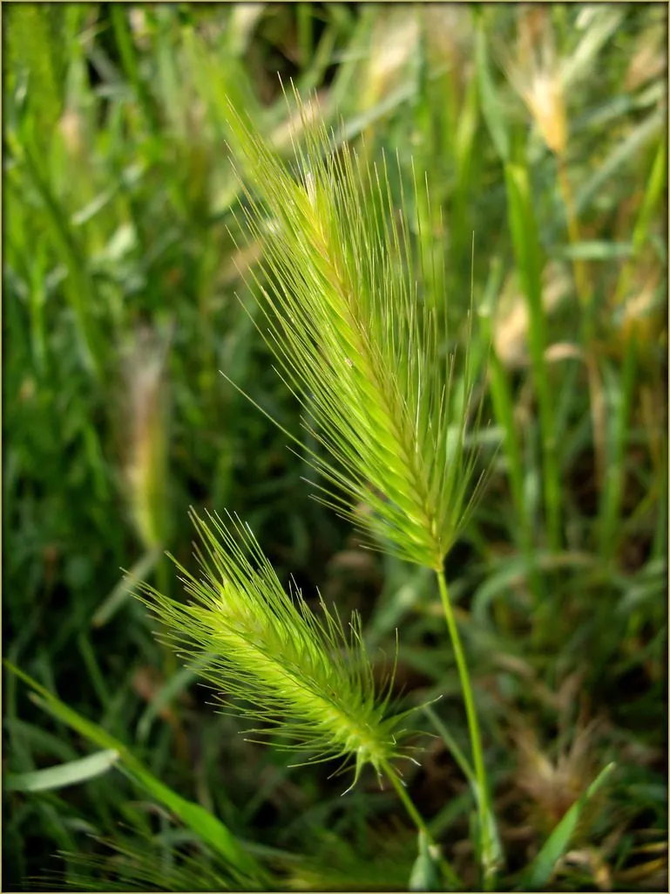

农作物与经济植物 · 植物界
青稞 Hordeum vulgare var. nudum

禾本科大麦属一年生草本，是大麦的裸粒变种，耐寒耐瘠，是青藏高原藏族同胞的主粮与青稞酒原料。
- 分类
- 门被子植物门纲木兰纲目禾本目科禾本科属大麦属
- 栖息环境
- 海拔 3000–4500 米的高原河谷与山坡，耐寒、耐旱、耐瘠薄
- 地理分布
- 中国西藏、青海、四川西部、云南西北部、甘肃南部；尼泊尔、不丹也有栽培
- 保护级别
- IUCN 暂无评估；栽培广泛，地方品种资源需保护
物种志
青稞为一年生草本，高 60–100 厘米，茎直立、丛生。叶片线形，长 10–20 厘米，叶鞘抱茎。穗状花序顶生，小穗多花，芒长，成熟时穗轴易折断；颖果裸露，不与稃壳粘连，成熟时黄褐色至紫黑色，千粒重较高。
青稞是大麦的裸粒变种，主要分布于中国西藏、青海、四川西部、云南西北部与甘肃南部，生于海拔 3000–4500 米的高原，耐寒、耐旱、耐瘠薄，是青藏高原唯一能大面积种植的粮食作物。青稞可磨成糌粑，是藏族传统主食；也可酿制青稞酒、制作青稞面条。它富含 β-葡聚糖与膳食纤维，近年来被开发为健康食品。青稞秸秆是高原牲畜的重要越冬饲料。
形态与习性
- 株高60–100 厘米，茎直立丛生
- 花期6–7 月，穗状花序顶生
- 收获期8–9 月，颖果裸露、黄褐色
- 光照喜光，高原强日照下生长良好
- 水分耐旱，生长期依赖融雪与降水
- 海拔3000–4500 米的高原河谷
- 主要用途糌粑、青稞酒、面条与牲畜饲料
趣味知识
- 青稞是大麦的裸粒变种，籽粒成熟后不带稃壳，可直接磨粉。
- 糌粑是藏族传统主食，由青稞炒熟后磨粉制成，便于高原携带。
- 青稞富含 β-葡聚糖，有助于调节血脂，近年被做成青稞麦片。
- 它是青藏高原唯一能大面积种植的粮食作物，被称为“高原之粮”。